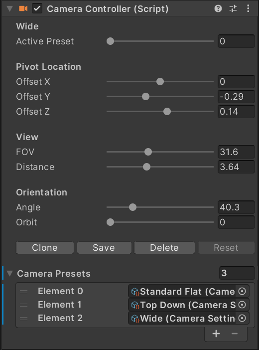

Camera Settings
The editor camera controller is a tool designed to set different camera views during the editing and testing process. It allows the camera to be easily adjusted with a few sliders as well as allowing for the saving and loading of presets.
The camera controller is setup to orbit around a focal point. While doing this it will automatically adjust the clipping planes on the camera to ensure the best quality shadows and highest precision sorting of transparent objects.
Note
In most 3D engines, a depth buffer us used for many rendering features such as shadows, transparency sorting and various post process effects. This buffer is a greyscale representation of the distance of a pixel from the camera. As such, it has a limited value range that must be spread to cover the entire scene. The larger the range, the less precision the buffer will have. By closely cropping the range, the precision can be increased. In using the camera controller this is handled automatically. If you add your own camera you will have to adjust this manually.
Usage
To use the camera controller, select the Camera scene object, which is at the very top of the hierarchy. In the inspector you will find a few sliders:
- Angle: Controls the angle of the camera to the table. A value of zero places the camera parallel to the table. A value of 90 places the camera perpendicular to the table.
- Offset XYZ: Moves the pivot point of the camera along the three world axis. X moves the camera left and right relative to where a player would stand. V moves it up and down and Z moves it forward and back. Angle, Distance and Orbit are always relative to this point.
- Distance: Moves the camera closer to or further away from the pivot point. This is used in conjunction with the FOV to frame the table in view.
- FOV: Sets the field of view of the camera. High values result in a wide field of view and more depth perspective. Low values narrow and flatten the view.
Note
Adjusting the distance and FOV together will control how much apparent depth there is to the table. A wide field of view and low distance will give the table a bit of perspective and depth, but will be more challenging to fit in the view without clipping the front, or having a lot of space to the sides in the back. Conversely, moving the camera further away and lowering the FOV will remove much of the perspective allowing the table to fit more evenly in the frame.
- Orbit: Controls the camera angle in an orbit around the table. 0 and 360 are standing in front of the table, 90 is on the left, 270 to the right.
Presets
Camera presets are stored camera settings that allow you to rapidly switch between different camera views. This can be useful when developing a table to view specific areas or just to take pretty screenshots.
The preset slider changes between the stored camera views. There are three views included by default. Any preset can be overwritten by changing the parameters and clicking the Save button. If Save is not pressed, the values will be lost when you cycle to a new preset. New presets can be made by adjusting the values and clicking Clone. This preset will be added to the presets at the end. You can delete any preset by setting the slider to that preset and clicking the Delete button.